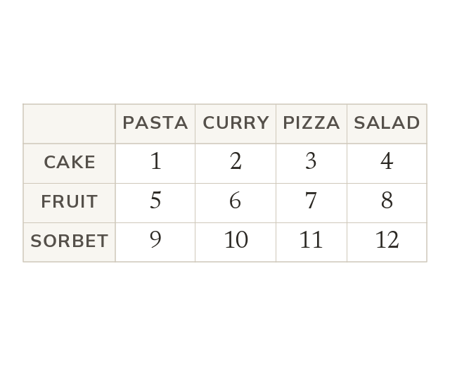

Multiply the choices
One choice in m ways and another in n ways give m × n together. The rule extends to more choices.
If one choice can be made in m ways and a second in n ways, the two together can be made in m × n ways. Every main pairs with every dessert, so the pairs fill a grid, and the rule extends to three or more choices.